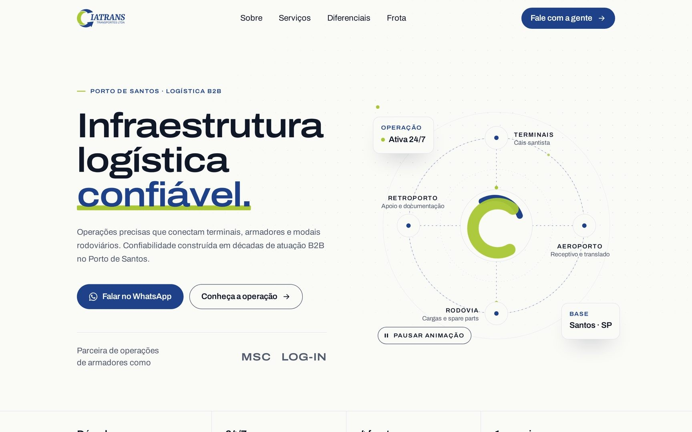
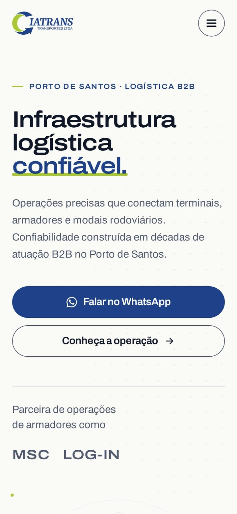
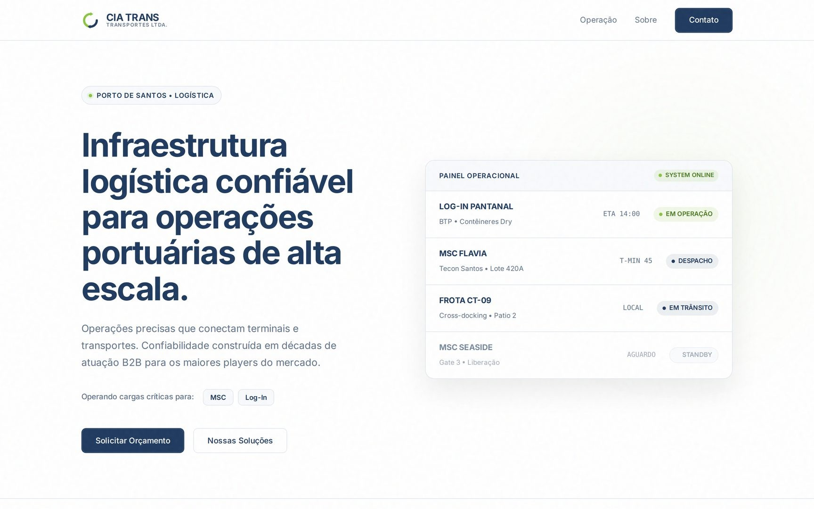
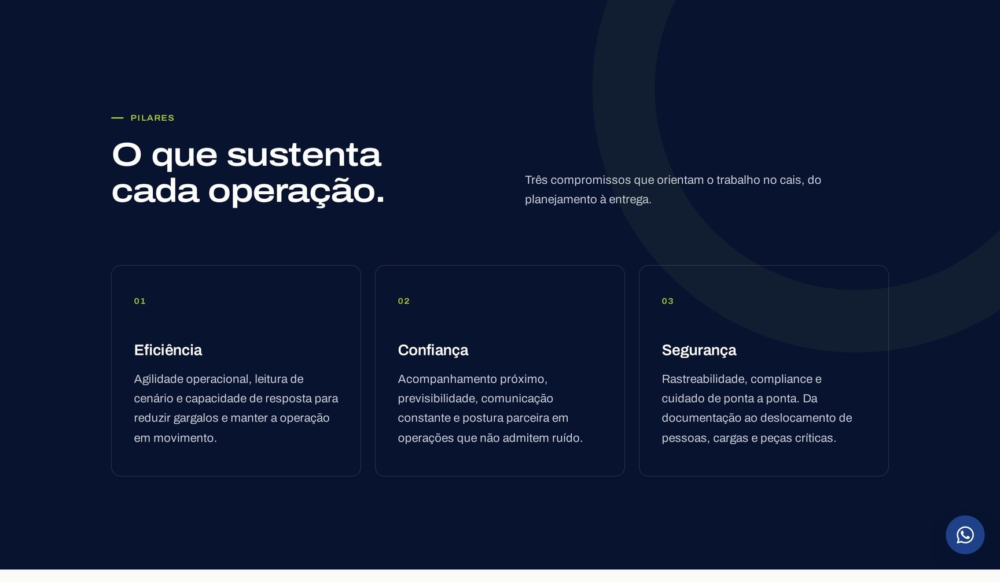
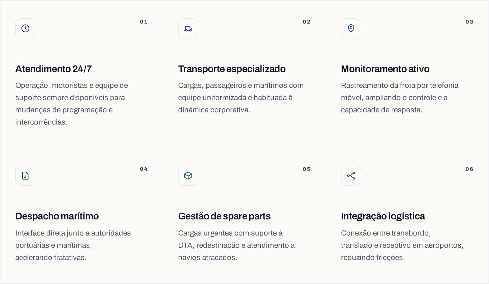
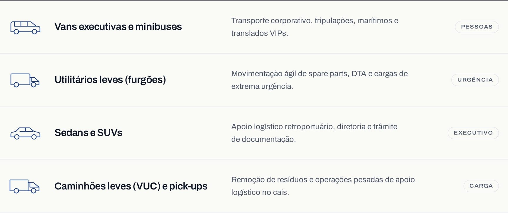
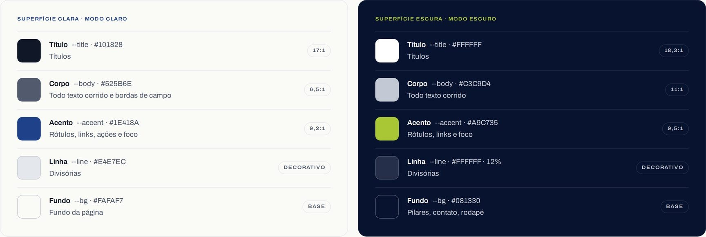
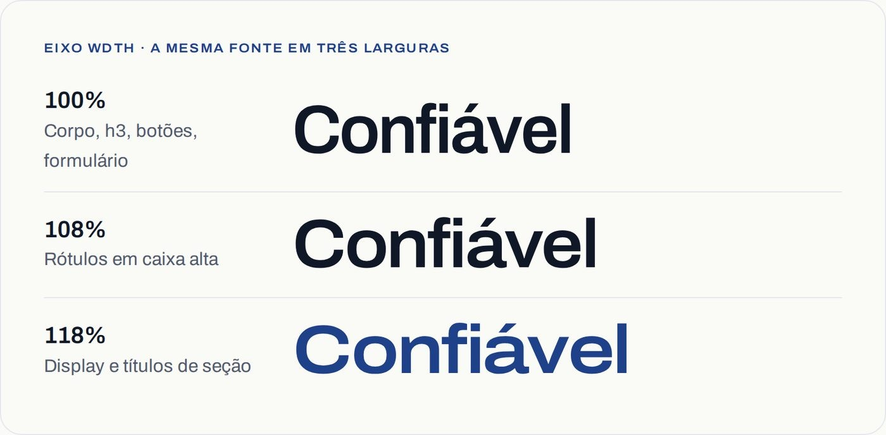
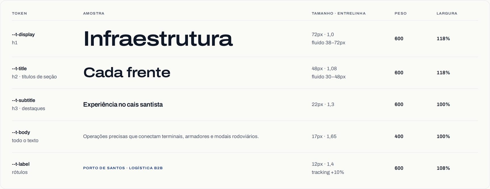
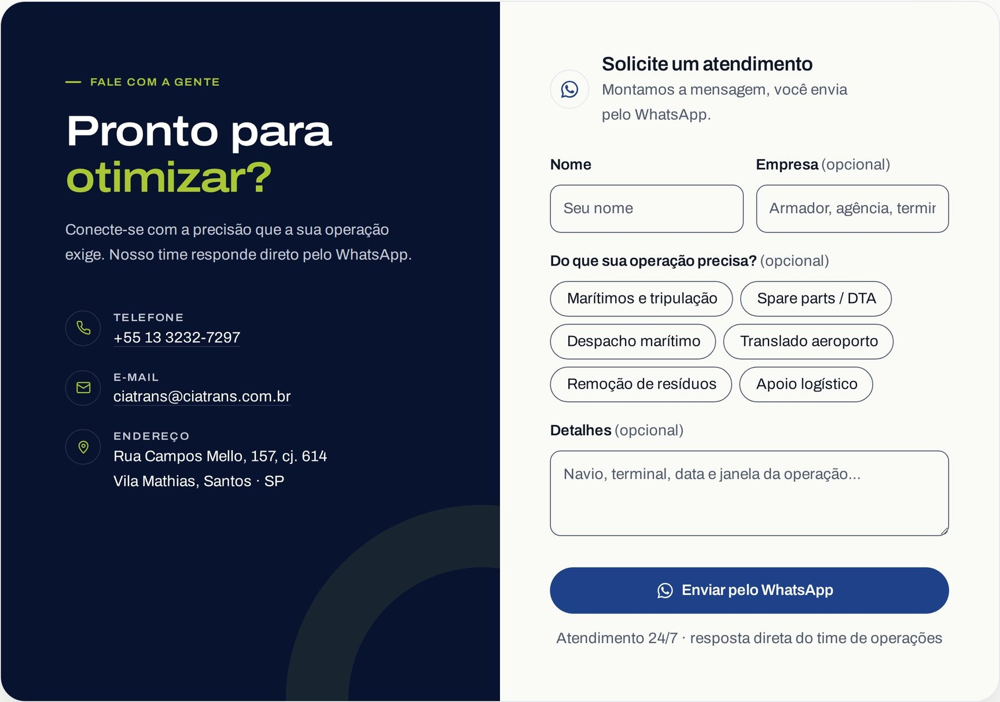

cliente · landing page + design system
no arCIATRANS
Logística portuária no Porto de Santos: a primeira peça de comunicação de uma empresa com décadas de operação e nenhum material próprio.
papel
Product design ponta a ponta + implementação
ferramentas
Figma, Claude Code, HTML/CSS, axe-core
entrega
Landing page, apresentação comercial e design system


Contexto
A CIATRANS presta suporte logístico no Porto de Santos há décadas: transporte de cargas e de marítimos, despacho, translados, spare parts, remoção de resíduos. Atende armadores, terminais e agentes — e não tinha nenhum material de comunicação próprio. Nem site, nem apresentação para mandar a um cliente novo.
A primeira versão que montei tinha um problema que eu mesmo criei: uma página bonita cheia de coisa que a empresa não faz. Painel de navios atracados, contagem de TEUs, carga oversized, números de operações por mês. Tudo plausível para uma transportadora portuária, nada verdadeiro para essa.
Quando a apresentação comercial ficou pronta, com o escopo real descrito pela própria empresa, o site foi refeito em cima dela. Este case é sobre essa correção de rota e sobre o sistema que sobrou dela.
Antes e depois
À esquerda, a versão que inventava uma operação. À direita, a versão que mostra a que existe: em vez de um painel de navios fictício, um diagrama da atuação integrada entre porto, retroporto, aeroporto e rodovia — que é justamente o diferencial da empresa, e o único dado que eu podia afirmar.

Direção de design
O azul e o verde vêm do logo da empresa, que é o único ativo de marca que existia. A régua foi manter a página clara e sóbria, com o azul-escuro entrando em poucos blocos — pilares, contato, rodapé — para marcar ritmo sem transformar o site num panfleto colorido.
O tom da escrita seguiu a mesma lógica: nada de "soluções inovadoras". A empresa vende previsibilidade em um ambiente onde tempo, documentação e acesso decidem a operação, e a copy fala disso.



O sistema em números
Cada papel visual tem um único valor. Se duas opções servem ao mesmo papel, uma delas sai.
- 4 → 1
- famílias tipográficas
- 4 → 2
- pesos
- 30 → 5
- tamanhos de fonte
- 46 → 10
- valores de cor
Cor por função
Em vez de uma paleta com dez valores soltos, cinco papéis: título, corpo, acento, linha e fundo. Cada papel tem um valor na superfície clara e outro na escura, e nenhum componente define cor própria. Os blocos escuros da página só trocam os valores dos papéis — o resto se ajusta sozinho, como um tema.
O verde-limão é decorativo no claro e só vira texto sobre o azul-escuro, onde alcança 9,5:1 de contraste. O hover das listas não é uma cor nova: é o acento a 5% sobre o fundo, calculado em tempo de render.

Uma família, um eixo
A primeira versão usava quatro famílias e trinta tamanhos diferentes. A final usa uma só: Archivo, variável, com dois pesos e cinco tamanhos. A personalidade não veio de uma segunda fonte, veio do eixo de largura da própria Archivo — 118% nos títulos, que dá o ar de sinalização e pintura de frota, e 100% no texto, que preserva a leitura.
É a decisão de que mais gosto no projeto, porque ela cabe numa frase: a largura virou uma decisão de sistema, não mais uma opção à mesa.


A documentação completa do sistema — papéis, escala, componentes e checagens — vive num único frame no Figma, com as cores como variáveis e os modos Claro e Escuro.
Acessibilidade
Validado com axe-core (WCAG 2.2 A, AA e boas práticas), em 1440px e em 320px.
-
Contraste como regra do sistema, não como ajuste final
Cada papel de cor nasceu com a razão de contraste medida. O menor valor de texto da página é 6,5:1, acima dos 4,5:1 exigidos, e as bordas de campo chegam a 6,5:1 — contra 1,2:1 da primeira versão, praticamente invisíveis.
-
Movimento que o usuário controla
O diagrama do topo anima em loop, então ganhou um botão de pausa (WCAG 2.2.2) e já começa parado para quem pede menos movimento no sistema.
-
Formulário que explica o erro
O erro deixou de ser só uma borda vermelha: virou mensagem em texto, anunciada por leitor de tela. Os campos opcionais são marcados e os serviços viraram um grupo com título próprio.
-
Teclado do começo ao fim
Link para pular ao conteúdo, anel de foco visível em todos os controles — azul no claro, limão no escuro —, Esc fechando o menu e nenhum elemento focável escondido fora da tela.
0
violações no axe-core
6,5:1
menor contraste de texto
320px
sem rolagem lateral
Resultado
A CIATRANS saiu de nenhum material para três peças que conversam entre si: a landing page no ar, uma apresentação comercial para enviar a clientes e a documentação do design system que sustenta as duas.
O contato acontece pelo WhatsApp do time, que é por onde a operação realmente responde. O formulário monta a mensagem já organizada — nome, empresa, serviços e detalhes da operação — para que o pedido chegue qualificado em vez de um "olá" solto às três da manhã.

Visitar o site (abre em nova aba)